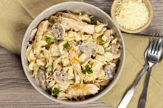

Chicken and Mushroom Pasta

Chicken and Mushroom Pasta
Use your stovetop to prepare this quick and tasty meal with chicken, spinach, mushrooms, and pasta for a weeknight, or for guests! Use one pot for the pasta and one pot for the chicken, veggies and sauce, then combine in a pretty pasta bowl or on a platter.
Ingredients
- 1 pound farfalle (bow-tie) pasta
- 3 tablespoons extra virgin olive oil
- 2 pounds chicken tenders, patted dry
- salt and ground black pepper to taste
- 24 ounces fresh mushrooms, sliced
- 1 medium onion, halved and thinly sliced
- 3 tablespoons fresh minced garlic
- 3 cups chicken broth
- 4 teaspoons Dijon mustard
- ¼ cup heavy cream
- 2 cups roughly chopped fresh spinach
- 2 tablespoons coarsely grated Parmesan cheese, or to taste
- 1 teaspoon chopped flat-leaf (Italian) parsley, or to taste (Optional)